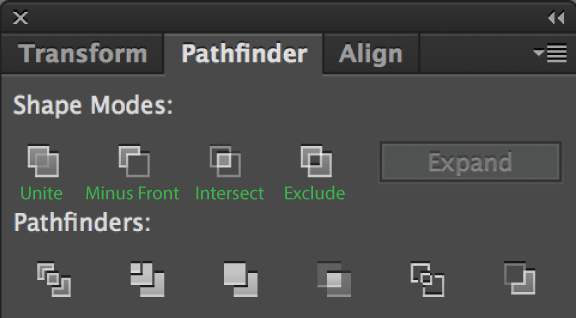
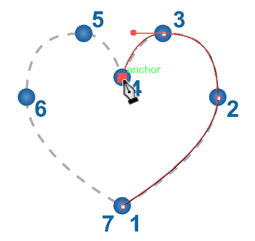
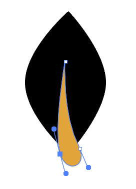

Adobe Illustrator, part of the Adobe Creative Suite package, is a powerful application used to create and edit vector graphics. This extremely popular application is a considered an industry standard, and is used widely by graphic designers to create logos, illustrations, and artwork for signs, posters, packaging and many other printed products. Adobe Illustrator can also be used to create illustrative web graphics.
About this Class
This manual provides a basic introduction to the Illustrator interface and explores commonly used features by guiding students through the creation of several logo icons, a web banner layout and a business card layout. During this class, students will:
Become familiar with the Illustrator environment and workflow
Gain experience drawing graphic elements using common Illustrator tools
Gain exerience creating web and print document layouts
Illustrator 1 is the first in a series of Illustrator classes and is intended to serve as an introduction to the application and to vector graphics in general. In order to explore more advanced techniques, students should consider enrolling in Illustrator 2. In addition, after completing Illustrator 1, students are eligible to enroll in Illustrator special topics classes, such as Logos and Typography.
This section provides a brief overview of the Illustrator interface and describes its commonly-used components.
Interface Overview
The portion of the Illustrator interface that is used to view and edit documents is known as the Workspace. A wide variety of windows, tools and menus (known as Panels) can be displayed within the Workspace in order to provide quick access to the feaures needed for a given task.
Creating a New Document
Open the Illustrator application.
Go to File > New
In the New Document window, adjust the settings to those shown below and Click OK.
Interface Components
Application Bar
The Application Bar contains the Workspace Switcher menu and a shortcut to Adobe Bridge and Adobe Stock. On Windows machines, the Application Bar also contains the File, Edit, View, etc menus. The Workspace Switcher menu can be used to arrange multiple windows. Use the drop-down menu to choose one of the many available window layout options.
Document Window
The Document Window displays the file that you are currently working on. If you have multiple files open, each file appears as a tab in the Document Window, as shown above. The white rectangle inside the Document Window, which displays the printable area of the Workspace, is called the Artboard.
Tools panel
The Tools Panel contains tools used to create and manipulate artwork (like a toolbox). To select a tool, simply click it. Tools with a triangle in the lower-right corner have additional tools hidden beneath them. To display hidden tools, click and hold a tool icon; a drop-down menu showing the hidden tools will appear.
Control panel
The Control Bar displays options for the currently selected tool. Control Bar options are generally a small subset of those available in other panels and menus. Keep in mind that there may be additional options for your selected tool beyond those displayed in the Control Bar.
Control Panel Not Appearing?
As of Illustrator 2018, the Control Panel is off by default.
To enable this feature for easier access to alignment and fill/stroke tools, go to Window > Control
Panels dock
Panels are menus that allow you to monitor and modify your artwork. By default, all Panels are closed and hidden beneath icons in the Panel Dock. Icons in the Panel Dock represent groups of related Panels; to open a Panel Group, click an icon in the Panel Dock.
Each Panel within a Panel Group is displayed on a separate tab. To bring a Panel to the front of the group, click its tab.
To close a Panel group, click the double arrows in the upper-right corner of the Panel Group.
Panels can also be displayed individually. To show a panel, go to the Window menu and Click its name. To hide the panel, go to the Window menu and Click the panel name again.
Navigating the Workspace
Working in Illustrator often involves moving around the workspace in order to focus on different portions of your project. In this section, we discuss a few methods of navigating the workspace.
Selection Tool
Selection Tool
Use this tool to select, move, resize, rotate, etc. entire objects or groups of objects.
Select multiple objects by holding Shift and clicking each additional object, or by clicking and dragging a box around the objects you'd like to select.
Shortcut: V
In the Tools Panel, Click the Selection Tool
Click on any object in the Artboard, a box with control points appear to designate an onbject is selected.
Hold down Shift and Click to select multiple objects
Direct Selection Tool
Direct Selection Tool:
Use this tool to select individual anchor points within a shape.
Select individual anchor points or path segments by clicking on them, or select an entire path or group by selecting any other spot on the item.
Select multiple anchor points by holding Shift and clicking each additional point, or by dragging a box around all points you'd like to select.
Shortcut:A
In the Tools Panel, Click the Direct Selection Tool
Click on an object on the Artboard
Click on an anchor point and drag
Click on a path and drag
Zoom Tool
Zoom Tool:
The Zoom Tool lets you zoom in or zoom out to increase or decrease the document display size.
Quickly zoom with any tool by holding Alt/Option and scrolling with the mouse/trackpad or by hitting Ctrl/Command and +/-
To fit the current artboard within the current window:Ctrl/Command + 0
Shortcut:Z
In the Tools Panel, Click the Zoom Tool.
To zoom in, Click in the Document Window. You can also use keyboard shortcut Ctrl/Command + +
To zoom out, Hold the Option/Alt key while clicking in the Document Window. You can also use keyboard shortcut Ctrl/Command + -
Hand Tool
Hand Tool:
Used to move around the Artboard when the document is zoomed in beyond the workspace.
Shortcut: Hold Spacebar while dragging with the mouse.
Zoom in on Artboard so it extends beyond the Workspace
In the Tools Panel, Click the Hand Tool.
To pan around the Artboard, Click and Drag in the Document Window.
Working with Shapes
Illustrator provides several shape tools that are used to draw pre-defined shapes. In this section of the class, we’ll experiment with some basic ways to use the Shape Tools and explain the distinction between Selection Tool and Direct Selection Tool in Illustrator.
Using Shape Tools
In the Tools Panel, Click the Rectangle Tool to select it.
Rectangle Tool
Use the Rectangle tool to draw rectangles and squares.
Hold the Shift key to draw a perfect Square.
Hold the Alt/option key to draw the shape from the center out (rather than from one corner to the other)
Shortcut:M
Click and Drag on the Artboard to create a rectangle. Notice that, by default, Illustrator starts drawing the shape from a corner. To draw from the center instead, hold the Option key while dragging.
To draw a perfect square: hold the Shift key, then Click and Drag on the Artboard. This technique works to create symmetrical shapes with other shape tools as well.
To create a shape with specified dimensions: select Rectangle Tool and Click once on the Artboard. In the window that opens, Type “2 in” in the Width field and “1 in” in the Height field, then Click OK. This creates a rectangle 2 inches wide by 1 inch high. Dimensions can also be specified using other units, such as pixels (px) or points (pt).
To draw other pre-defined shapes: Click and Hold the Rectangle Tool in the Tools Panel to display hidden tools. Practice drawing other shapes with above methods.
Resizing Shapes
Select the shape with Selection Tool, then hover mouse over Control Points (until double straight arrow appears) Click and Drag the mouse to resize shape (hold the Shift key to constrain proportion).
Another method to resize shapes: Select the shape with Selection Tool. Double Click the Scale Tool in the Tools Panel. To resize shape larger than origianl, enter value greater than 100; and less than 100 to make shape smaller than original (keep original proportion by selecting uniform).
Copying & Pasting Shapes
Using the Selection Tool, Click on an object you want to duplicate.
To Copy the object go to (Edit > Copy or Ctrl/Command + C)
To Paste it (Edit > Paste or Ctrl/Command + V).
Rotating Shapes
Select the shape with Selection Tool, then hover mouse over Control Points (until double ben arrow appears) Click and Drag the mouse to rotate shape.
Another method to rotate shapes: Select the shape with Selection Tool. Double Click the Rotate Tool in the Tools Panel. You can either enter an exact value or drag the desired rotation angle on the circle.
Deleting Shapes
Removing individual shape: Click the shape with Selection Tool and Press Delete.
Removing multiple shapes at once: Use the Selection Tool, Click while holding down Shift key on each shape and Press Delete.
With the Selection Tool, Click and Drag a box around all of the shapes that you just drew. This technique, sometimes called “rubber banding,” selects all of the objects in a given area of the document. Press Delete to remove the shapes.
Combining Shapes
Let’s draw the star for our first icon. In the Tools Panel Click and Hold the Rectangle Tool to display hidden tools, then Click the Star Tool.
Star Tool
Use this tool to create star shapes with multiple points.
Click and drag to create a star shape. Use the up and down arrow keys while dragging to choose the number of points.
Click once to bring up a dialog box to choose the inner and outer radii of the shape, as well as the number of points.
Click once on the Artboard to specify the dimensions of the star. In the window that opens, Enter the following values:
Radius 1: 0.1 in
Radius 2: 0.5 in
Points: 6
Click OK to create the star.
Adding Color to Shapes
By default, Illustrator applies a black stroke and white fill. Stroke is the outline around the edge of a shape and Fill is the shading inside a shape. There are several ways to specify colors in Illustrator; other methods will be introduced later in the class.
Click the Selection Tool, then Click the star shape to select it. In the Control Panel, Click the Dropdown arrow to apply a color to the fill.
Since we do not want a stroke on the star, find the stroke swatch Dropdown and Click the white square with a red slash through it, which means no color.
We’ll now add the small circles to the points of our star. In the Tools Panel, Click and Hold the Star Tool to display hidden tools, then Click the Ellipse Tool.
With the Ellipse Tool selected, Hold the Shift key, then Click and Drag on the Artboard near the tip of one of the star points to create a small circle, as shown below.
Use the Selection Tool and/or the Arrow Keys to adjust the size and position of the circle, if needed.
Quick-Copy Shapes
Hold Alt/option then click and drag the desired shape to duplicate.
Release the mouse button while still holding Alt/option to create a copy.
This can be used to quickly create copies of layers, appearances, and fills/strokes as well.
Add circles by Copying and Pasting shapes to the remaining points. Your finished icon should look similar to the image below.
Grouping Shapes
When we create a complex shape from multiple simple shapes, it’s helpful to be able to move and resize all the shapes as one object. In Illustrator, we can do this using the Group function.
Using the Selection Tool, Click and Drag a box around your star icon. This selects all of the shapes at once.
In the Object menu at the top of the window, Click Group.
Now when you click on the star it will also select all the shapes that makes up the icon. (To ungroup the object go to Object > Ungroup).
Creating More Advanced Shapes
Modifying Shape Stroke
In the Tools Panel, Set the Fill to none and the Stroke to black.
In the Tools Panel, Select the Ellipse Tool.
Ellipse Tool
Use the Ellipse tool to easily draw ellipse and circles.
Hold the Shift key to draw a perfect circle.
Hold the Alt/option key to draw the shape from the center out (rather than from one corner to the other)
Shortcut:L
With the Ellipse Tool selected, Click and Drag on the Artboard to draw a horizontal oval shape.
Set the stroke width to 2 pt, then let’s try out the stroke width variation by choosing the third setting in the dropdown menu, Stroke Width Profile 2.
Rotating Shape
Using the Selection Tool, Select the ellipse that you just created and Copy it (Edit > Copy or Ctrl/Command+C).
Instead of simply pasting it, use the Paste in Front command (Edit > Paste in Front or Ctrl/Command+F) to place the copy directly on top of the original.
You can also use Edit > Paste In Place (Ctrl/Command+Shift+V) to paste a copied object directly into the same spot as the original.
The pasted ellipse should already be selected. If not, Click it using the Selection Tool, then, in the Tools Panel, Click the Rotate Tool.
Rotate Tool
Click and drag to rotate a shape around a given point. By default, shapes will rotate around their center point.
Click once outside the shape to select the point around which it will rotate.
Hold Shift and drag to rotate in 45 degree increments.
Shortcut:R
With the Rotate Tool selected, Click on or near the ellipse and Drag to rotate it approximately 60 degrees counter-clockwise.
Transforming Shape
We’d like our final ellipse to mirror the angle it’s currently positioned at. To do this, Click and Hold the Rotate Tool to display hidden tools, then Double Click the Reflect Tool.
Reflect Tool
Similar to the Rotate tool, click and drag to rotate a shape around a given point.
Click once outside the shape to choose the point around which to reflect.
Double-click the tool icon to bring up the Reflect dialog box, which allows you to easily flip a shape horizontally or vertically.
Shortcut:O
Set the Axis to Vertical and the Angle to 90, then Click Copy.
To complete the icon, Use the Ellipse Tool to add solid black circles as shown in the example.
Finally, as in the previous icon, we’ll group the shapes that make up this icon. Use the Selection Tool to draw a box around all of the shapes that make up the icon, then Go to the Object menu at the top of the window and Choose Group.
Creating Complex Shapes with Pathfinder
The Pathfinder Panel is an extremely useful Illustrator feature that is used to combine shapes in different ways. Here we will use it to create a cloud shape by combining circles.

Pathfinder
The Pathfinder panel allows you to create more complex shapes by combining or subtracting two or more overlapping shapes. Access Pathfinder via Window > Pathfinder
Select two or more overlapping shapes and use the Shape Modes buttons in the Panel to combine them.
The four modes are:
Unite: Combine two or more shapes into one, eliminating internal paths that overlap.
Minus Front: Subtract the shape in front from the shape behind.
Intersect: Keep only the areas where both shapes overlap.
Exclude: Remove the areas where both shapes overlap.
Pathfinder options
OriginalUnite
Minus Front
IntersectExclude
Creating the Cloud Icon
Using the Ellipse Tool, draw overlapping circles of different sizes while holding the Shift key.
Using the Selection Tool, position the circles so they outline the shape of a cloud.
With the Selection Tool, Select all the circles.
Open the Pathfinder Menu (Window > Pathfinder).
Under Shape Modes, Click the first icon, Unite. When used on stacked shapes, this mode unites all the circles into a single shape.
We now have a single shape built from several smaller shapes. This shape can be treated just like any regular shape with a stroke and fill.
Drawing with the Pen Tool
In Illustrator, the Pen Tool is used to draw custom shapes from scratch by laying out a series of curve and corner points connected by paths. We’ll use this tool to draw the center vein of our leaf, but, since the Pen Tool is notoriously difficult to master, we’ll complete a few practice exercises first.
Exercise 1: Straight Lines
From the class files folder, Open the file named pen-tool-exercise.ai. This file contains three “connect-the-dots” exercises. We’ll start with Exercise 1.
2. Before you start drawing, make sure that the stroke color is set to a color that you can see easily (such as black), and that the fill color is set to none
In the Tools Panel, Click the Pen Tool.
Pen Tool
The Pen tool is used to create anchor points and adjust the angles of the curves connecting them.
Click once to create an anchor point. A line appears from the last anchor point you've placed, connected to wherever your mouse cursor is on screen. Click again to create additional points.
Click and drag to set the angle for the control handle, which affect the angle of lines (also known as paths) that connect the anchor points.
Click the first point you created to close your shape and stop adding new points.
To stop creating new points without closing your shape, hit the Esc key or select another tool.
Click once in the center of Target 1 to place your first point. Then pen tool creates paths between multiple points, so we won’t see a line appear until we place the next point.
Click once in the center of Target 2 to place another point. This time, a line should appear between the points in Targets 1 and
Click in the center of Targets 3 and 4 to continue drawing the shape.
Modifying Shape
Use the Direct Selection tool to move individual points at any time.
To close the shape, Hover over Target 1 until you see a small circle appear next to your cursor. This indicates that Illustrator will now close the path. Click the point in Target 1 to close the path.
Exercise 2: Curved Lines
Continuing on in the same file, Move to Exercise 2.
With the Pen Tool still selected, Click in the center of Target 1 and Drag upward toward the red target. Notice that this creates a point with two “antennae” sticking out from it. These anennae are called “control handles,” and they are used to define the direction and size of curves. Though we won’t see a line appear until we create the next point, adding these control handles to our first point sets the stage for a curved line.
Click in the center of Target 2 and Drag downward toward the red target. A curved path is created between Targets 1 and 2. Note that, if we had dragged upward at Target 2, the curve would have formed an S shape instead of a U shape.
Finish the curved line by Clicking once in the center of Target 3 and drag upward toward red target.
Since this is not a closed shape, we will need to press the Enter key in order to move on to another task. Using the Direct Selection tool, we can move the control handles to adjust the curves.
Exercise 3: Heart
The first two exercises covered the bare essentials of the pen tool; to learn more, try this bonus exercise! Make sure that you are not still editing your curve from Exercise 2. Either press the Enter key or switch to the Selection tool, then back to the Pen tool.
Continuing on in the pen-tool-exercise.ai file, Move to the Exercise 3.
Before moving onto the next section, try to do this exercise without help. If you get stuck, you can turn on guides similar to the ones in Exercise 2. To turn on these guides, Open the Layers Panel (Window > Layers) and unhide the layer called Ex 3 Hints by clicking in the space to the left of the lock icon.
Click on Target 1 to start the shape.
Click Target 2 and Drag upward to create a set of Control Handles. It will help to hold Shift while dragging control handles -- this will restrain their angle to 45-degree increments. If you are not using the Ex 3 Hints layer, use the dotted outline as a guide.
Click on Target 3 and drag slightly to the left.

Click Target 4, but do not drag! We want this to be a corner.
Click Target 5 and Drag your cursor to the left.
Click Target 6 and Drag your cursor downward.
Hover over Target 7 until you see a small circle appear next to your cursor. This indicates that Illustrator will now close the path. When you see the circle appear, Click Target 7.
If you have time, practice making your own shapes with the Pen Tool! The kind of curve that the Pen Tool makes is called a bezier, and it is used in an extremely wide variety of softwares including programs for design, sound production, and animation.
For even more practice, here’s a fun game to help you master the pen tool: http://bezier.method.ac/
Creating an Icon from Scratch
We could draw our leaf outline by hand, but it’s much easier to achieve symmetrical, professional-looking shape by modifying a Shape Tool object. In this exercise, we’ll create our leaf shape by modifying a Shape Tool square.
Modifying Shape Paths
In the Tools Panel, Click and Hold the Ellipse Tool to reveal hidden tools, then Click the Rectangle Tool.
With the Rectangle Tool selected, Hold the Shift Key, then Click and Drag on the Artboard to create a square. In the example file, the square was about .75 in.
Now, we’ll rotate the square 45 degrees either with the Rotate Tool or with the Selection Tool Click the square and Hover just outside the edge of the square until you see a double-ended, curved arrow.
With the double-ended, curved arrow showing, hold the Shift (this limit the rotation to 45 degree increments), then Click and Drag to rotate the square 45 ̊
Next, we’ll begin altering the shape to turn it into a leaf. In Illustrator, every shape is made up of points connected by paths; we can change a shape by modifying the individual points that define it. In the Tools Panel, Click the Direct Select Tool, then Click and Drag the left-most point of the diamond inward slightly. Repeat for the right-most point so the shape becomes more diamond-like.
Currently, the left and right points of our diamond are sharp corners - not very leaf- like! Fortunately, we can change any corner point to a curved point using the Convert Anchor Point Tool. In the Tools Panel, Click and Hold the Pen Tool to reveal hidden tools, then Click the Convert Anchor Point Tool.
With the Convert Anchor Point Tool selected, Click the left-most point of the diamond and begin dragging upward so that a set of Control Handles appear. After you start dragging, hold the Shift key to keep the Control Handles at a 90 degree angle.
Repeat for the right-most point, but Drag downward with the Convert Anchor Point Tool, doing your best to match the curve on the left side.
Once the curves have been created, you can use the Direct Selection Tool to adjust them by dragging the Control Handles.
Drawing the Midrib
We’ll use the Pen Tool to add the center vein to the leaf.
Let’s lock our leaf shape so that we can draw on top of it without changing it. Using the Selection Tool, select the leaf shape, then, in the top menu bar, choose Object > Lock > Selection.
In the Tools Panel, Click the Pen Tool to select it (it may be hidden beneath another tool; if so, Click and Hold to display hidden tools).
Set the Stroke to none and the Fill to a color other than black, so that you can see it easily.
Using the Pen Tool, Click three times over the lower half of the leaf shape to create the vertices of a narrow triangle. Illustator automatically connects these points with paths. To close the shape, Hover over the first point until you see a tiny circle next to your cursor, then Click your first point.
In the Tools Panel, Select the Convert Anchor Point Tool and use it on the bottom points of the triangle to curve the shape slightly. Don’t worry about how the bottom edge of the triangle looks – this portion will not be part of the finished shape.

Adjust the Anchor Points and Control Handles using the Direct Selection Tool until you’re satisfied with the shape.
Subtracting Shapes with Pathfinder
We’ll again use Pathfinder functions to cut the center vein shape out of the leaf shape.
With the Selection Tool, Select both the leaf and the vein shape.
Before we can work with the leaf shape, we need to unlock it. In the top menu bar, Choose Object > Unlock All.
Open the Pathfinder Menu (Window > Pathfinder).
Under Shape Modes, Click the second icon, Minus Front. When used on two stacked shapes, this mode cuts the top shape out of the bottom shape.
Using the Selection Tool, Rotate the leaf shape slightly. Note that you can still adjust the points and control handles if you’d like to refine the shape further.
Gradients
In this section, choose one of the icons from the previous exercises to create a finished logo by adding a background gradient and drop shadow effects.
First, we will create a background shape for our icon. To do this, Select a shape tool from the tools panel (Rectangle, Rounded Rectangle, or Ellipse) and Set the fill to a color other than white.
Adust the size and position of your background shape with the Selection Tool
Click and Drag on the Artboard over your chosen icon to create a shape that is an appropriate size.
To move the shape so it's behind the icon: Select your background shape with the Selection Tool, Go to the top menu bar, and Choose Object >Arrange > Send to Back.
Now for the gradient! With the background shape selected, Click the Gradient Icon in the Panel Dock to open the Gradient Panel
Make sure the the solid color swatch square in on top of the hollow square (since we want to change the fill not the stroke), then Click the black and white gradient swatch to apply it to the shape.
Double-Click the black color swatch on the Gradient Slider to edit it.
In the menu that opens, Click the Swatches Icon at left, then Click one of the colors.
Click the Palette Icon to edit the color, if you like, then Click the Gradient Panel to close the Color window.
Double-Click the white color swatch on the Gradient Slider and repeat steps 3-4 to edit it. Our goal is to create a subtle color change, so make the second color similar to the first color, but slightly lighter (hint: start with the same swatch as the first color).
Back in the Gradient Panel, we’ll add one more color to our gradient - another instance of the first color. To do this, Move the lighter color to the center of the slider, then Click the darker color. Hold the Option/Alt key and Drag it all the way to the left.
Click and Drag the diamond shapes above the Gradient Slider to adjust the color transition points.
Next, we’ll tilt the gradient pattern slightly. In the Angle field, Type “30”.
To finish, we’ll change the icon color from black to white. If you chose the star or the leaf, Select the the icon using the Selection Tool and Change the Fill to white. If you chose the Atom, the filled and unfilled shapes must be changed separately. With the Direct Selection Tool, Select the three unfilled ellipses (Hold the Shift key to select multiple objects at once), then Change the Stroke Color to white. Repeat for the filled ellipses, changing the Fill Color from black to white.
Effects
Illustrator offers many pre-defined effects, such as glows, warps, and shadows. Illustrator 2 covers effects in greater detail, but, in this exercise, we’ll add a simple drop shadow effect as a finishing touch.
We’ll add a shadow to both the icon and the background shape. Using the Selection Tool, Select both objects.
In the top menu bar, choose Effect > (Illustrator Effects) Stylize > Drop Shadow.
In the Drop Shadow window, Type the values shown below (or adjust the settings to create your own shadow!)
Leave the remaining options as they are and Click OK.
Working with Type
Illustrator offers a great deal of flexibility and control when using typography. This section will cover some of the basics, as advanced typography techniques are covered in Illustrator 2.
Point Type
In this exercise, we’ll add text to the icon we completed in the previous section.
In the Tools Panel, Click the Text Tool
Type Tool
The Type tool is used to create and edit text.
Click once to create point type, which will continue in an unbroken line unless line breaks are manually entered.
Click and drag to create a box for area type, where type will only appear within a given square.
Use the Character Panel (Window > Type > Character) to change tracking (aka how far apart letters are from each other), leading (pronounced ledding, which is how far apart lines of text appear), font size and family, and more.
Click Once on the Artboard to create a Text Insertion Point, then Type a name for the logo.
Press Return to start a new line and Type a tagline or a brief description for your company.
With the Type Tool still selected, Highlight the text that you just created and go up to the Control Bar. Open up the Character Panel to change the type face, style, size and color.
When you’re happy with your design, group all of the elements together (Edit > Group)
Save your file (File > Save or Ctrl/Command + S)
Saving/Exporting Final Artwork
When saving or exporting from Illustrator, it’s important to choose file formats and settings that are appropriate for the intended use of your artwork. In this section, we’ll learn to save artwork properly for print and web applications.
Saving for Print
You can print Illustrator files from the computer that you created them on without issue, however, if you are printing files from another computer or sending them to a print shop, there are a few points to note:
Color Space
For printing, Illustrator files should be in CMYK color mode. Using the Print Preset when creating a new document sets the color mode to CMYK. To verify that your document is in CMYK mode:
In the top menu bar, Choose File > Document Color Mode.
Make sure that CMYK is selected.
Fonts
Fonts are stored on individual computers - there’s no guarantee that another computer or a print shop will have the font(s) you used in your document. To ensure that your type shows up as planned, it’s a good idea to convert your type to outlines. This means changing your type from live, editable type to shapes that Illustrator treats just like any other shape object. To convert type to outlines:
Before outlining type, always Save a Copy of the file (File > Save a Copy).
Make sure that all objects and layers are unlocked, then select everything in your document (Edit > Select All or Ctrl/Command + A).
In the top menu bar, Choose Type > Create Outlines.
DO NOT save outlined type in your original document - you won’t be able to edit it!
Links
Though we did not cover placing images into Illustrator files, you’ll likely encounter this feature as you work further in Illustrator. When images are placed into Illustrator documents, they are not embedded into the file; instead, a reference (link) to an external file is created. In order to print files with linked images, the external image files must be available. To avoid missing images, do one of the following:
Place all of your linked files into one folder and supply this to your printer, along with your document file.
Embed your linked files into the document:
In the top menu bar, Choose Window > Links to open the Links Panel
Select all of the files in the Links Panel, then Click the Menu Icon and Click Embed Image.
Save your document as a PDF (see instructions below); linked files will automatically be embedded into the PDF.
File Format
Most print shopes use Adobe Creative Suite software, but they may not have the same version that you used to create your document. To avoid file format problems, it’s a good idea to save your final document in a universal format, such as PDF. To save a PDF from Illustrator:
Outline your fonts first, following the directions above - fonts are not embedded in PDF documents.
In the top menu bar, Choose File > Save As
In the Save As window that opens, Choose Adobe PDF, then Click Save.
In the Save Adobe PDF window that opens, Set the Adobe PDF Present field to High Quality Print.
Click Save PDF.
Saving for the Web
Images used on the Web must meet specific file format and size requirements. In order to use our banner graphic on a website, we’ll need to convert it to a different file format. This process is called image optimization.
Image Size/Resolution
Since image file sizes affect the amount of time it takes to load a web page into a browser, it’s important to keep file sizes as small as possible, while still maintaining reasonable quality.
Always set image resolutions to 72ppi (pixels per inch) - this is the default resolution of most device screens.
Always scale images to the exact size needed - if the space on your web page is 960px x 180px, your image should be 960px x 180px. While browsers can scale images to fit a particular space, this results in distortion and/or image files that are larger than necessary.
Web Image Formats
Web browsers are only able to display a few types of images, therefore, we often need to convert original images into a web-friendly format. Different formats are used for different types of images:
Format
Characteristics
Best for
GIF
Great at compressing flat color, but can only display 256 colors. Can display simple on/off transparency.
Illustrations/text with flat colors, and animation
JPEG
Can display millions of colors; smaller file size than PNG-24
Photographs, graded colors (ie: gradients)
PNG-8
Great at compressing flat color, but can only display 256 colors. Can display simple on/off transparency. (similar to GIF)
Illustrations/text with flat colors
PNG-24
Able to display partial transparency (shadows, etc)
Illustrations with more complex colors, screenshots, and non-photograph images
Optimizing Images
Fortunately, Illustrator includes features that make it easy to optimize web graphics.
In the top menu bar, Choose File > Export > Save for Web.
Illustrator attempts to choose the file format and settings that are best for the artwork in your document. As noted in the table above, GIF and PNG files are generally best for illustrative art.
In this case, Illustrator chose GIF. Click Save.
In the Save window that opens, Change the file name to logo-web.gif and Navigate to your class files folder.
Click Save to create a copy of your logo for web in GIF